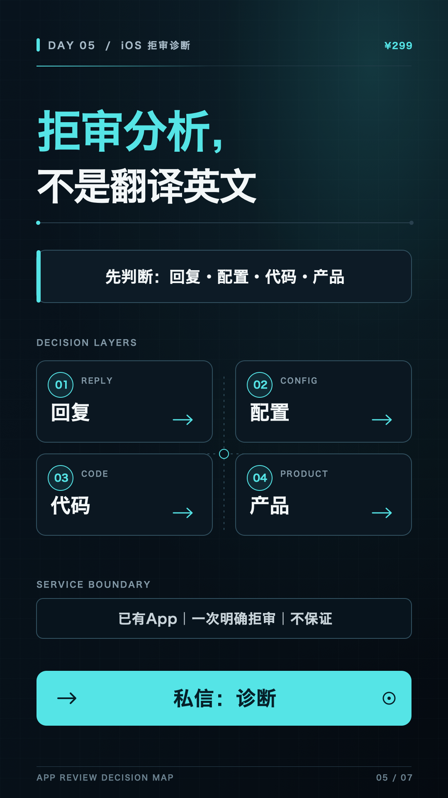

DAY 05 · 诊断 / MVP · 两个独立 CTA
拒审分析不是翻译英文。
短视频与 X 服务诊断；公众号长文独立服务 MVP。两类内容分别发布、分别分流。
今日验收
- 发布视频、X 与 1 篇公众号长文。
- 完成 7 条精准互动。
- 2 个有效私信、1 份结构化资料。
10 小时安排
- 从真实私信提取误区；没有就不编造。
- 分别写诊断短内容与 MVP 长文。
- 录制剪辑并整理长文图示。
- 按不同关键词发布与分流。

打开 Day 5 竖屏封面 PNG ↗